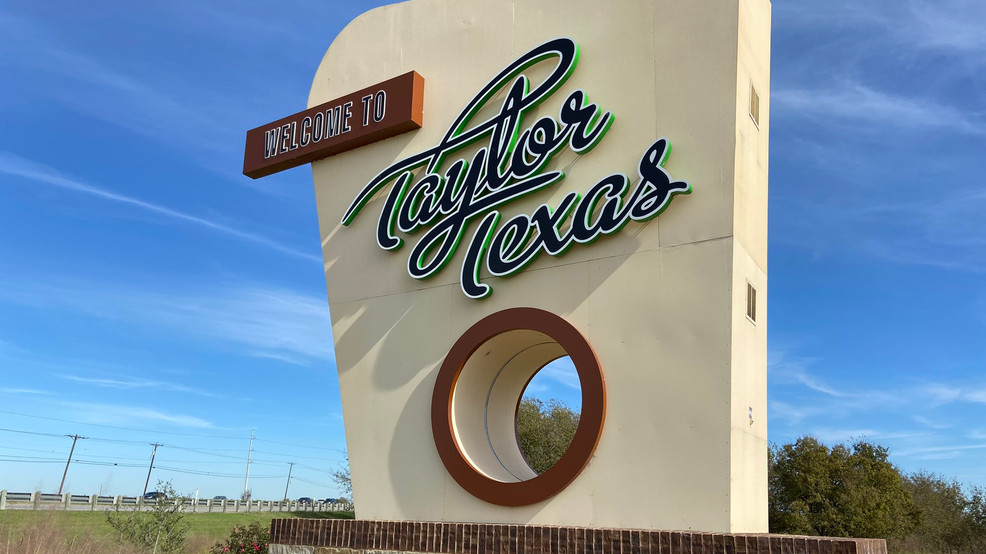
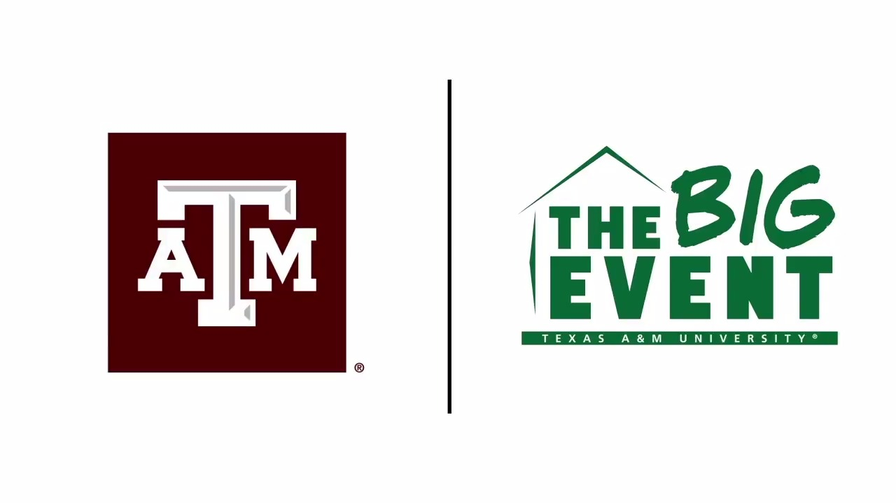
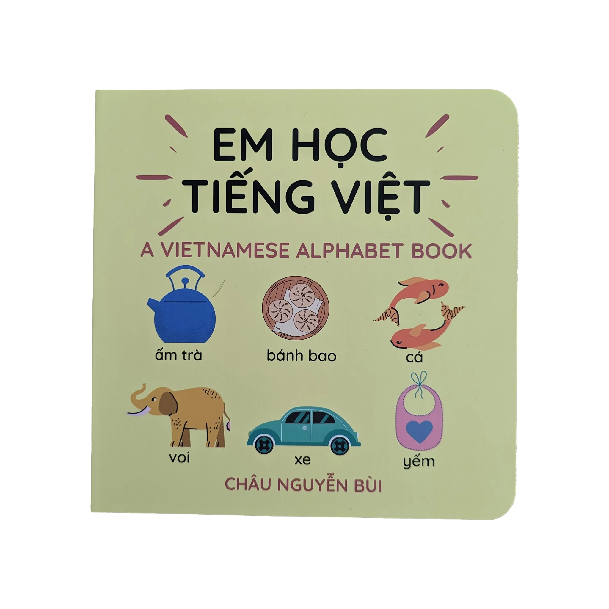

Service
Over the past couple years, I have given back to my community through volunteering. Most recently, I have volunteered to work at a food bank in Taylor, Texas with my fellow interns at Samsung Austin Semiconductor. There, we organized food to be given out to the less fortunate. In the spring of 2023, I took part in the Big Event at TAMU. At this event, I helped a family in College Station with their yard work. My group helped pick weeds, lay out mulch, and plant flowers and other plants as well. Finally, back in the summer of 2017, I volunteered to tutor/teach young children how to read, write, and speak Vietnamese. All of these volunteering events allowed me to give back to the communities that have allowed me to become the person that I am today.
Food Bank Volunteer, Summer 2024
Packed, sorted, and organized canned foods at a food bank in Taylor TX. Taylor TX Food Bank
TAMU Big Event, Spring 2023
Volunteered to work at the home of a College Station resident. TAMU Big Event
Vietnamese Tutor, Summer 2017
Volunteered to teach young kids how to read, write, and speak Vietnamese. Learn Vietnamese
